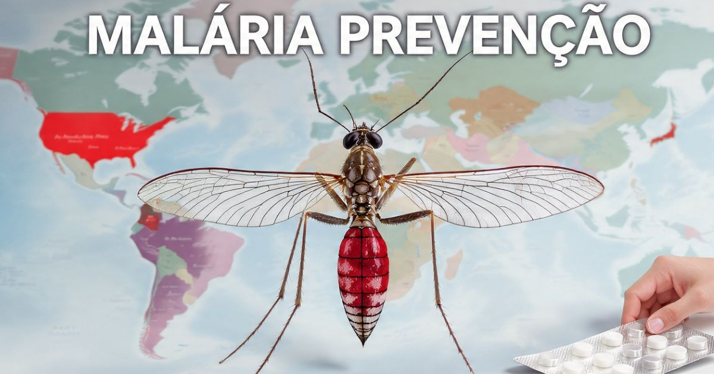

Malária em viagens 2026: guia completo de prevenção
Introdução: um dos maiores riscos para viajantes
A malária é uma das doenças mais perigosas para viajantes que se aventuram em regiões tropicais e subtropicais do mundo. Transmitida pela picada de mosquitos infectados, a doença pode ser fatal se não for diagnosticada e tratada rapidamente. A cada ano, milhões de viajantes visitam áreas de risco sem a devida proteção, colocando sua saúde em perigo.
Em 2026, a malária continua sendo uma preocupação significativa para viajantes que se dirigem a países da África, Ásia, América Latina e Oceania. No entanto, com as informações corretas e as medidas de prevenção adequadas, é possível viajar com segurança para essas regiões.
Neste guia completo sobre prevenção da malária em viagens, você vai encontrar tudo o que precisa saber para se proteger: o que é a malária, quais são os sintomas, quais são as áreas de risco no mundo, como prevenir a doença, quais medicamentos profiláticos estão disponíveis, como usar repelentes corretamente, como é feito o diagnóstico e o tratamento, e dicas valiosas para viajantes.
Nosso objetivo é que você viaje com segurança e tranquilidade, sabendo que está protegido contra uma das doenças mais perigosas do mundo.

O mosquito Anopheles, transmissor da malária, é o principal vetor da doença
O que é a malária
A malária é uma doença infecciosa causada por parasitas do gênero Plasmodium, transmitidos pela picada de mosquitos fêmeas infectados do gênero Anopheles. A doença afeta milhões de pessoas em todo o mundo, especialmente em regiões tropicais e subtropicais.
Como é transmitida:
- Picada de mosquito infectado: A transmissão ocorre quando um mosquito Anopheles infectado pica uma pessoa e injeta os parasitas na corrente sanguínea.
- Transfusão sanguínea: Em casos raros, a malária pode ser transmitida por transfusão sanguínea.
- Transmissão congênita: Gestantes infectadas podem transmitir a doença ao feto.
Parasitas causadores:
- Plasmodium falciparum: O mais perigoso e responsável pela maioria das mortes por malária. É comum na África e em partes da Ásia.
- Plasmodium vivax: O mais comum fora da África, com capacidade de recidiva.
- Plasmodium malariae: Menos comum, mas pode causar infecções crônicas.
- Plasmodium ovale: Menos comum, encontrado principalmente na África e em partes da Ásia.
Importância da prevenção: A malária é uma doença potencialmente fatal, mas pode ser prevenida com medidas simples e eficazes.
Sintomas da malária
Os sintomas da malária geralmente aparecem de 10 a 15 dias após a picada do mosquito infectado. Conhecer os sintomas é fundamental para buscar tratamento precoce.
Sintomas típicos:
- Febre alta: Febre elevada, geralmente superior a 38°C, com calafrios intensos.
- Calafrios e tremores: Sensação de frio intenso, mesmo com febre.
- Sudorese: Suor excessivo após a febre.
- Dores de cabeça: Dor de cabeça intensa e persistente.
- Dores musculares e articulares: Dor generalizada no corpo.
- Náuseas e vômitos: Mal-estar gastrointestinal.
- Fadiga: Cansaço extremo e fraqueza.
Quando procurar ajuda médica:
- Se você estiver em uma área de risco e apresentar febre, calafrios ou outros sintomas.
- Se os sintomas persistirem por mais de 48 horas.
- Se você tiver sintomas graves (confusão, convulsões, dificuldade respiratória).
Áreas de risco no mundo
A malária é endêmica em várias regiões do mundo. Conhecer as áreas de risco é essencial para planejar a prevenção.
África:
- África Subsaariana (Nigéria, República Democrática do Congo, Tanzânia, Moçambique, etc.) — Área de alto risco.
- África Ocidental (Gana, Costa do Marfim, Senegal, etc.) — Área de alto risco.
- África Oriental (Quênia, Uganda, Etiópia, etc.) — Área de alto risco.
- África Austral (África do Sul, Zâmbia, Zimbábue, etc.) — Área de risco moderado.
Ásia:
- Índia, Paquistão, Bangladesh — Área de alto risco.
- Sudeste Asiático (Tailândia, Vietnã, Camboja, Laos, Myanmar) — Área de alto risco.
- Indonésia, Filipinas, Malásia — Área de risco moderado.
- China (áreas do sul) — Área de risco moderado.
América Latina:
- Amazônia brasileira, Peru, Colômbia, Venezuela, Equador — Área de alto risco.
- Bolívia, Paraguai, Guiana, Suriname — Área de risco moderado.
- México (áreas do sul) — Área de risco moderado.
Oceania:
- Papua Nova Guiné — Área de alto risco.
- Ilhas Salomão, Vanuatu — Área de risco moderado.
Dica: Consulte o site da OMS (World Health Organization) ou do CDC (Centers for Disease Control and Prevention) para obter informações atualizadas sobre áreas de risco antes de viajar.
Como prevenir a malária
A prevenção da malária envolve uma combinação de medidas de proteção contra mosquitos e uso de medicamentos profiláticos.
Medidas de proteção pessoal:
- Use repelentes: Aplique repelente com DEET, Icaridina ou IR3535 nas áreas expostas da pele.
- Vista roupas adequadas: Use roupas de mangas compridas e calças, especialmente ao entardecer e à noite.
- Use mosquiteiros: Dormir sob um mosquiteiro tratado com inseticida é uma das medidas mais eficazes.
- Use inseticidas: Use sprays inseticidas ou repelentes elétricos nos quartos.
- Evite áreas com mosquitos: Evite áreas com água parada, que são criadouros de mosquitos.
Medidas ambientais:
- Evite áreas com água parada.
- Use telas em janelas e portas.
- Elimine criadouros de mosquitos (água parada, recipientes, etc.).
Medicamentos profiláticos para malária
Os medicamentos profiláticos são uma das formas mais eficazes de prevenir a malária em áreas de risco. Consulte um médico para escolher o medicamento mais adequado para sua viagem.
| Medicamento | Indicação | Como usar |
|---|---|---|
| Atovaquona-Proguanil | Áreas com resistência à cloroquina | 1 comprimido/dia, começar 1-2 dias antes, continuar 7 dias após |
| Doxiciclina | Áreas com resistência à cloroquina | 1 comprimido/dia, começar 1-2 dias antes, continuar 4 semanas após |
| Mefloquina | Áreas com resistência à cloroquina | 1 comprimido/semana, começar 1 semana antes, continuar 4 semanas após |
| Cloroquina | Áreas sem resistência à cloroquina | 1 comprimido/semana, começar 1 semana antes, continuar 4 semanas após |
Importante:
- Consulte um médico: A escolha do medicamento deve ser feita por um médico especialista.
- Efeitos colaterais: Os medicamentos podem ter efeitos colaterais. Informe-se sobre eles.
- Contraindicações: Alguns medicamentos não são indicados para gestantes, crianças ou pessoas com certas condições de saúde.
Repelentes: como escolher e usar
Os repelentes são uma das medidas mais importantes de proteção contra mosquitos transmissores da malária.
Principais ingredientes ativos:
- DEET (N,N-dietil-meta-toluamida): O repelente mais eficaz e testado. Concentração de 20-50% oferece proteção por 2-6 horas.
- Icaridina (Picaridina): Uma alternativa eficaz ao DEET, com menos odor. Concentração de 20% oferece proteção por 4-6 horas.
- IR3535: Eficaz contra mosquitos, mas com proteção menos duradoura que o DEET.
- Óleo de eucalipto-limão: Uma alternativa natural, mas com proteção mais curta.
Como aplicar repelente:
- Aplique em áreas expostas da pele (braços, pernas, pescoço, rosto).
- Aplique após o protetor solar.
- Reaplique a cada 2-6 horas, conforme a necessidade.
- Evite aplicar em feridas ou mucosas.
- Lave as mãos após a aplicação.
Diagnóstico e tratamento da malária
O diagnóstico precoce e o tratamento adequado são fundamentais para evitar complicações graves da malária.
Diagnóstico:
- Teste de gota espessa: Exame de sangue que detecta o parasita da malária.
- Testes rápidos (RDT): Testes que detectam antígenos da malária em minutos.
- Diagnóstico molecular: PCR (Reação em Cadeia da Polimerase) para casos específicos.
Tratamento:
- Tratamento para malária não complicada: Medicamentos como artemisinina combinada (ACT), cloroquina, mefloquina, etc.
- Tratamento para malária grave: Hospitalização e tratamento intravenoso com artesunato ou quinina.
- Importância do tratamento precoce: O tratamento deve ser iniciado assim que o diagnóstico for confirmado.
Dicas para viajantes
- Consulte um médico antes de viajar — Faça uma consulta de medicina do viajante pelo menos 4-6 semanas antes da viagem.
- Leve um kit de emergência — Leve um kit com repelente, mosquiteiro e medicamentos.
- Monitore sua saúde — Preste atenção a sintomas como febre e calafrios.
- Busque ajuda médica rapidamente — Se você apresentar sintomas, procure um médico imediatamente.
- Siga as orientações médicas — Tome os medicamentos profiláticos conforme a orientação médica.
A malária é uma doença grave, mas pode ser prevenida com medidas simples: use repelente, roupas adequadas e mosquiteiro, e tome os medicamentos profiláticos corretamente. Consulte um médico antes da viagem e monitore sua saúde. Com essas precauções, você pode viajar com segurança para áreas de risco!
❓ Perguntas Frequentes sobre malária em viagens
Não. A malária é transmitida exclusivamente por mosquitos fêmeas infectados do gênero Anopheles. Nem todos os mosquitos transmitem a malária.
A prevenção envolve uma combinação de medidas: uso de repelente, roupas de mangas compridas, mosquiteiro tratado com inseticida e medicamentos profiláticos. Nenhuma medida isolada oferece 100% de proteção.
Sim. Efeitos colaterais como náuseas, tontura, insônia e pesadelos podem ocorrer. Consulte um médico para escolher o medicamento com menos efeitos colaterais para você.
Sim, a vacina RTS,S (Mosquirix) está disponível para crianças em áreas endêmicas, mas não é recomendada para viajantes. A prevenção continua sendo a principal forma de proteção para viajantes.
A duração varia conforme o medicamento: atovaquona-proguanil (7 dias após a viagem), doxiciclina e mefloquina (4 semanas após a viagem).
Sim. Crianças também precisam de profilaxia, mas as doses são ajustadas de acordo com o peso. Consulte um pediatra especializado em medicina do viajante.
Sim, a malária é curável se for diagnosticada e tratada precocemente. O tratamento varia conforme a gravidade da doença e o tipo de parasita.
Sim, a malária pode ser fatal, especialmente a causada pelo Plasmodium falciparum. O diagnóstico e tratamento precoces são fundamentais para evitar complicações graves.